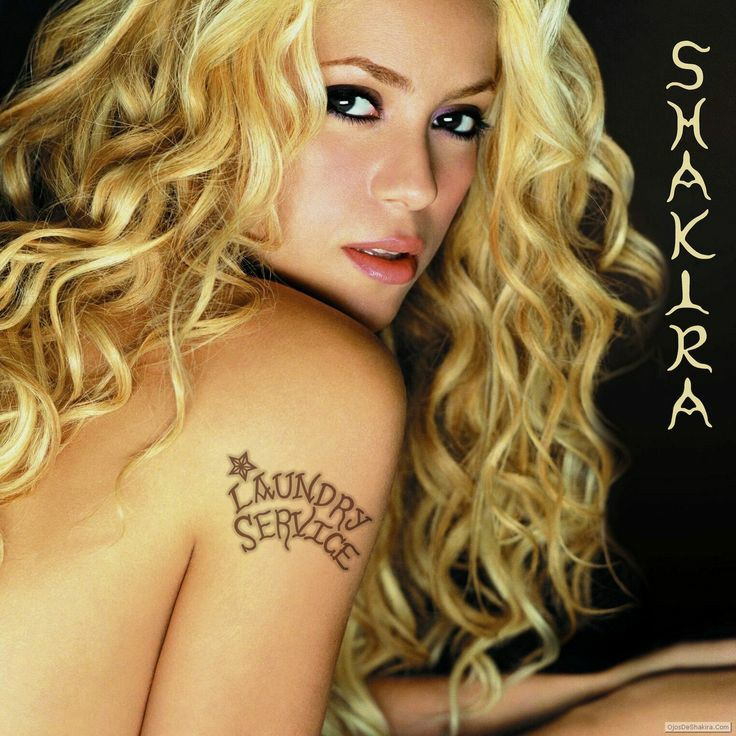

Trayectoria musical
Su alto nivel de ventas, versatilidad vocal y su éxito global la ha llevado a ser calificada por importantes revistas y medios con el apodo de «Reina del pop latino». Es considerada un icono mundial de la música latina, desde su debut en los años 90 hasta la actualidad ha tenido una gran repercusión en la escena musical, siendo citada en numerosas ocasiones por inspirar e influir a toda una generación de cantantes. Con una carrera artística de más de treinta años, es una de las artistas con mayores ventas discográficas en la historia, con ventas estimadas en más 125 millones de ventas, siendo también la artista latina con mayores ventas en los Estados Unidos.
Album más reconocido

- Objection (Tango)
- Underneath Your Clothes
- Whenever, Wherever
- Rules
- The One
- Ready for the Good Times
- Fool
- Te dejo Madrid
- Poem to a Horse
- Que me quedes tú